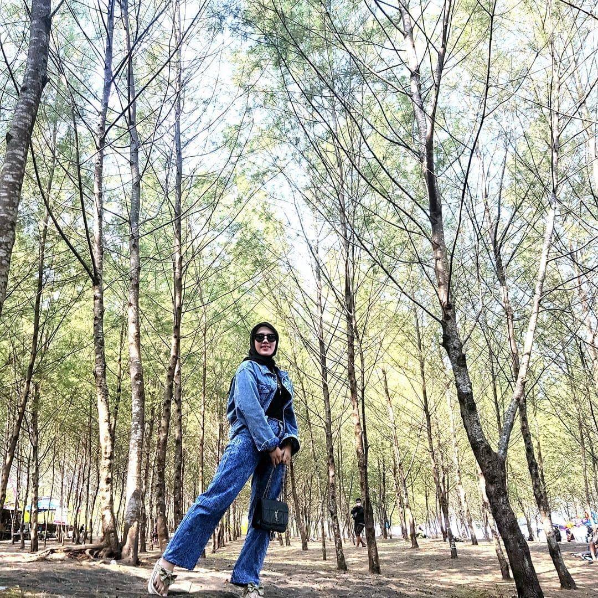
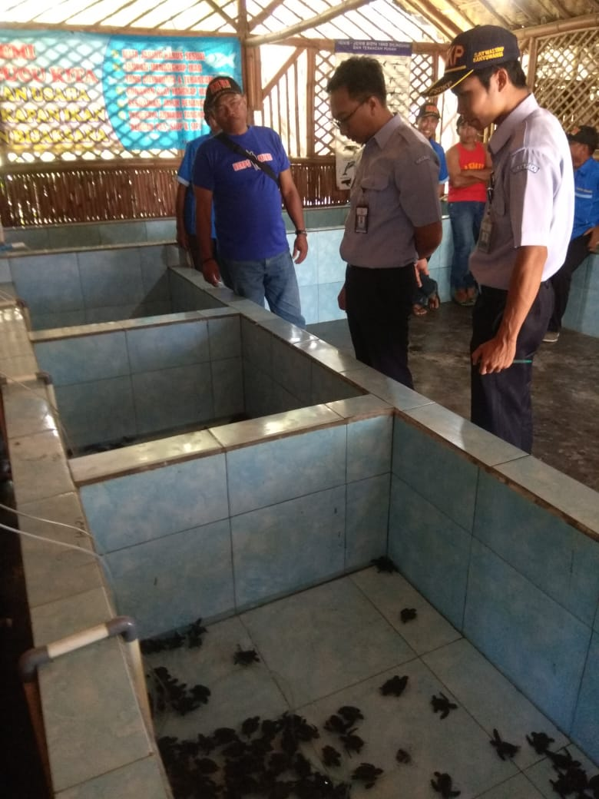

Enjoy Wonderful Day With Your Family



#Selamat Datang di Website Resmi Pantai Cemara Dusun Rejo
Tahukah kamu bahwa di Kabupaten Banyuwangi ini tidak hanya memiliki pantai-pantai saja. Namun juga memiliki titik hutan kota yang berada di pantai. Dimana hutan kota tersebut memiliki fungsi alam yang sangat penting, Menjadi pusat produksi oksigen dan penahan abrasi. Salah satu Pantai Hutan Kota itu ialah Pantai Cemara. selain itu Pantai Cemara juga jadi tempat konservasi penyu loh.

Total Hewan
Pengunjung Pertahun
Jumlah Anggota
Penyu yang dilepas liarkan
#Informasi Pelayanan
Call for more info
#Tempat Konservasi

Salah satu kelompok nelayan penggerak di pantai cemara pakis dengan menyuarakan perihal penanaman pohon cemara

Salah satu kelompok nelayan penggerak di pantai cemara pakis yang menyuarakan dan mengetahui permasalahan mangrove.

Salah satu kelompok nelayan penggerak di pantai cemara pakis menjadi juru kunci konservasi Penyu.